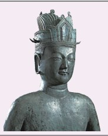
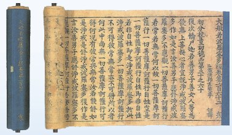
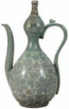
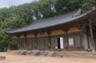
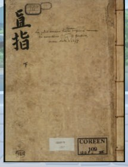

고려의 토지 제도, 대외 교역 및 찬란한 불교 문화
태조의 역분전에서 전시과·녹과전·과전법으로 이어진 토지 제도와 상업·화폐·벽란도 국제 무역의 일직선 흐름을 먼저 세우고, 고려의 양천제·구휼·양성평등 가족 제도를 토대로 고려 전기(10세기부터 12세기 중반까지) 호족 불교·국난 극복 문화·의천·관학 진흥·｢삼국사기｣에서 고려 후기(12세기 중후반부터 1392년까지) 지눌의 결사 운동·팔만대장경·상감청자·성리학 수용·목조 건축과 ｢직지심체요절｣에 이르는 문화사를 엄격한 연대기와 인과관계로 입체 규명합니다.
1. 고려의 토지 제도 변천과 상업·화폐·대외 교역(벽란도)
앞 단원에서 살펴본 바와 같이 태조 왕건이 후삼국 통일 직후 호족을 포섭하려 지급한 역분전(940년)은 공로와 주관적 인품에 기댄 임시 조처였기에, 광종의 과거제와 4색 공복 제정으로 관료 체제가 정비되자 개국 공신이 아닌 일반 관료들에게 직무 대가를 공정하게 배분할 새 토지 제도가 절실해졌습니다. 이에 고려 국가는 백성들이 실제로 소유해 매매·상속·임대가 자유로웠던 사유지인 민전(수확량의 10분의 1 수세, 재해 시 촌전·수령·호부·삼사·안찰사 심사를 거쳐 감면)을 바탕으로 관리에게 땅의 소유권이 아니라 농민으로부터 조세를 거둘 권리인 수조권을, 논밭인 전지와 땔감을 얻는 임야인 시지로 묶어 18과로 차등 지급하는 전시과 제도를 세웠습니다(앞 단원 통일신라 신문왕이 노동력 징발이 포함된 녹읍을 폐지하고 수조권만 준 관료전의 원리를 계승함). 먼저 경종 때 시정전시과(976년)에서는 아직 호족 세력이 남아 있던 현실을 감안하여 4색 공복을 바탕으로 관품과 함께 주관적 기준인 '인품'을 병행 적용해 전직·현직 관리에게 토지를 지급하였습니다. 이어 성종이 2성 6부와 12목을 정비한 직후 목종 때 개정전시과(998년)에서는 공신·호족의 주관적 우대를 끊어 내고 객관적 관료 서열을 세우려는 목적 아래 인품 기준을 완전히 배제하고 18과의 '관품'만을 기준으로 전직·현직 관리에게 지급하였습니다. 그러나 문벌귀족 사회가 굳어지고 세습 토지가 늘어나 국가가 나누어 줄 수조지가 바닥을 드러내는 위기가 닥치자, 문종 때 경정전시과(1076년)를 단행하여 퇴직한 전직 관리를 지급 대상에서 제외하고 오직 '현직 관리'에게만 수조권을 지급하도록 축소하였으며, 동시에 소외되던 무관에 대한 대우를 일부 개선하여 체제의 균형을 맞추려 하였습니다(이러한 수조지 부족 대응은 훗날 조선 세조가 현직 관리에게만 수조권을 준 직전법과 똑같은 논리입니다).
전시과 체제에서 일반 관료가 받은 과전은 사망하거나 퇴직하면 국가에 반납하는 것이 원칙이었으나, 앞 단원에서 본 문벌귀족이 세력을 세습할 수 있었던 결정적 경제 기둥인 공음전은 5품 이상 고위 관리에게 지급되어 자손에게 합법적으로 세습되었습니다. 이 밖에도 6품 이하 하급 관리의 자제로서 관직에 오르지 못한 자에게 준 한인전, 군인이나 하급 관리의 유가족 생계를 도운 구분전, 그리고 군역을 세습하는 군인전과 앞 단원에서 배운 지방 향리 직역을 세습하는 외역전은 해당 신분이나 직역을 잇는 조건으로 세습이 허용되었습니다. 한편 국가는 왕실의 경비를 충당하기 위해 내장전을, 중앙과 지방 각 관청의 행정 운영 경비를 충당하기 위해 공해전을 두었으며, 사찰이 보유한 사원전의 경계와 면세 특권을 공적으로 보증하기 위해 상서호부의 공문을 받아 선종 2년인 1085년 양산 통도사 국장생 석표를 세우기도 하였습니다. 그러나 무신정변 이후 무신과 친원파 권문세족이 불법으로 대농장을 겸병하고 대몽 항쟁으로 토지 대장마저 불타 버리면서 전시과 제도는 완전히 붕괴하였습니다. 이에 1270년 개경 환도 직후 원종은 당장 관리들에게 줄 녹봉조차 부족한 재정 파탄을 수습하기 위해 1271년(원종 12년) 경기 8현의 토지를 현직 관리에게 나누어 주는 미봉책인 '녹과전'을 실시하였습니다. 그럼에도 권문세족의 농장 겸병이 멈추지 않고 충목왕의 정치도감(1347년)과 공민왕·신돈의 전민변정도감(1366년)마저 좌절되자, 1388년 위화도 회군으로 실권을 장악한 이성계와 조준·정도전 등 급진파 신진사대부는 권문세족의 경제 기반을 완전히 해체하고 새 국가의 재정과 자신들의 경제 토대를 세우겠다는 목적 아래 1391년(공양왕 3년) '과전법'을 공포하였습니다. 과전법은 권문세족의 불법 농장을 몰수하고 지방 세력의 사적 토지 지배를 막기 위해 원칙적으로 '경기 지방'의 토지에 한하여 전·현직 관리에게 수조권을 지급하였으며(관료 사망 후 과부와 어린 자녀의 생계를 보장하는 수신전·휼양전은 세습 허용), 이로써 다져진 경제력은 이듬해 신진사대부와 이성계가 조선을 건국하는 직접적 물적 토대가 되었습니다.
농업 생산력과 도회지 교역이 커지자 고려 정부는 시장을 통제해 물가를 안정시키고 화폐를 유통해 국가 재정을 확충하는 정책을 전기부터 말기까지 일관되게 추진하였습니다. 수도 개경에는 시전을 설치하고 상행위와 도량형·물가를 감독하는 경시서를 두었으며(신라 경주의 동시전 및 훗날 조선 한양의 평시서와 대비됨), 서적점·약점·다점·주점 같은 관영 상점을 직접 운영하였습니다. 개경과 지방의 상업 거래가 촘촘해지자 개성 상인들은 현금과 외상 거래의 수입·지출을 네 항목으로 빈틈없이 기록하는 독자적 복식부기 회계법인 사개치부법을 발전시켰으며, 수공업 역시 고려 전기에는 관청 수공업과 앞 단원에서 본 특수 행정 구역 '소'(동소·철소·자기소·지소·묵소 등)의 공납 생산이 중심이었다가 무신정변 이후 소 주민의 저항과 해체를 거쳐 고려 후기에는 승려가 직물·양조·제지를 맡은 사원 수공업과 민영 수공업 중심으로 전환되었습니다. 화폐 유통의 변화도 시간순으로 뚜렷한 계보를 이룹니다. 먼저 성종 15년(996년)에는 뒷면에 '동국'을 새겨 고려의 주체성을 드러낸 우리나라 최초의 금속 화폐이자 철전인 건원중보를 발행하였고, 이어 숙종 때에는 송나라의 화폐 경제를 보고 온 승려 의천과 윤관 등의 건의를 받아들여 화폐 유통으로 상업을 장려할 목적으로 주전도감(1097년)을 설치하여 우리나라 지형을 본떠 은 1근으로 만든 고액 은화인 활구(은병, 1101년)와 동전인 삼한통보·해동통보(1102년)·해동중보·동국통보를 주조해 재추와 문무 양반·군인에게 나누어 주었으나 일반 백성 사이에는 여전히 곡식과 삼베가 주로 쓰였습니다. 이후 원 간섭기에 원의 지폐인 보초가 유입되고 은병이 유출되며 거친 삼베(추포)가 난립해 화폐 질서가 극도로 문란해지자, 공민왕 대 이후 소액 화폐와 지폐(저화) 도입 논의가 본격화되었고, 마침내 고려 말 1391년(공양왕 3년)에는 자섬저화고를 두어 닥나무 지폐인 저화(고려통행저화)를 발행하기에 이르렀습니다(비록 곧 폐기되었으나 조선 태종 때 사섬서 설치와 저화 발행의 직접적 선례가 됨).
후삼국 통일 이후 고려 사회가 안정을 되찾자 왕실과 귀족 사이에서 비단·서적·약재 같은 고급 물품의 수요가 크게 늘고, 동시에 국내에서 생산되지 않는 은·모피·유황 등의 전략·생활 물자를 안정적으로 확보해야 할 필요성이 커졌습니다. 이에 고려 국가는 선진 문물을 수용하는 한편 외국 사신과 상인의 출입을 수도의 관문에서 직접 통제·관리해 공·사 무역의 이익을 극대화하겠다는 목적 아래, 개경에서 가까운 예성강 어귀의 국제 무역항 벽란도를 국가적 교역 거점으로 삼아 고려 전기부터 후기까지 대외 교역을 크게 번영시켰습니다. 고려는 송나라로부터 비단·서적·자기·약재·악기를 수입하고 인삼·모시·종이·먹·나전칠기·화문석을 수출하였는데, 1123년(인종 원년) 송나라 사절의 일원으로 벽란도를 거쳐 개경에 들어온 서긍은 한 달 남짓 머물며 보고 들은 고려의 문물과 비색 청자의 아름다움을 ｢선화봉사고려도경｣에 남겼으며, 풍랑을 헤치고 돛을 올린 무역선을 새긴 고려 동경인 황비창천 명 거울도 활발한 해상 교역을 증언합니다. 아울러 요(거란)·여진(은·모피 수입, 식량·농기구·포목 수출)·일본(수은·유황 수입, 곡물·서적·대장경 수출) 상인은 물론 멀리 서역의 아라비아(대식국) 상인까지 벽란도에 내항해 수은·향료·산호 등을 교역하면서 고려의 국호가 서방 세계에 '코리아'로 널리 알려졌습니다. 한편 고려 후기에는 무신정변과 대몽 항쟁, 권문세족의 농장 겸병과 과중한 수탈로 농촌이 피폐해지면서, 땅을 묵혀 지력을 회복하던 기존의 휴경 농법만으로는 식량 부족과 삼베 위주 의생활의 추위를 견디기 어려운 심각한 민생 위기가 닥쳤습니다. 이에 제한된 토지의 이용률을 끌어올려 수확량을 늘리고 백성에게 따뜻하고 질긴 새 의류 원료를 보급하려는 목적 아래 선진 영농 기술과 신작물 도입이 적극 추진되었습니다. 그 결과 농업에서는 휴경지를 줄여 2년 동안 세 번 수확하는 2년 3작 윤작법과 남부 일부 지방의 모내기법(이앙법)이 보급되어 생산력이 높아졌고, 1349년(충정왕 1년) 이암이 원나라 강남의 영농 기술을 정리한 농서 ｢농상집요｣를 국내에 소개(공민왕 때 합천에서 간행, 훗날 조선 세종 때 우리 풍토에 맞춰 지은 정초·변효문의 ｢농사직설｣과 구별됨)하였으며, 1363년(공민왕 12년) 문익점이 원에서 목화씨를 들여와 장인 정천익과 함께 재배하고 씨아·물레로 면포를 짜는 데 성공하면서 백성들의 의생활을 근본적으로 바꾸어 놓았습니다.
| 경제 · 토지 구분 | 제정 시기 및 국왕 | 핵심 대상 및 수조권·제도 내용 | 인과 배경 및 수험 판별 포인트 |
|---|---|---|---|
| 역분전 | 태조 23년 (940) | 후삼국 통일 공신·군인 (인품과 공로 기준) |
전시과의 모태로, 관등 확립 전 개국 공신의 충성도와 공로를 기준으로 차등 지급 |
| 시정전시과 | 경종 원년 (976) | 전직 · 현직 관료 (4색 공복 + 관품·인품 병행) |
전지와 시지를 18과로 지급한 첫 전시과, 호족 잔존으로 주관적 '인품' 병행 |
| 개정전시과 | 목종 원년 (998) | 전직 · 현직 관료 (인품 배제, 18과 관품만 적용) |
성종 2성 6부 정비 직후 인품을 완전히 삭제하고 오직 관품만으로 관료 서열 확립 |
| 경정전시과 | 문종 30년 (1076) | 오직 '현직' 관료에게만 지급! (18과 관품 기준) |
세습 토지 증가로 수조지가 고갈되자 전직 관리를 전면 배제(무관 대우 일부 개선) |
| 세습 · 공용 토지 및 녹과전 |
문종 대 확립 / 원종 12년 (1271) |
세습: 공음전(5품 이상)·한인전·구분전·군인전·외역전 / 공용: 내장전·공해전·사원전 / 녹과전: 경기 8현 현직 | 공음전은 문벌귀족 세습 기반, 통도사 국장생 석표(1085)는 사원전 경계 보증 / 녹과전은 대몽항쟁 뒤 녹봉 부족 임시 미봉책 |
| 과전법 | 공양왕 3년 (1391) | 전직 · 현직 관료 (경기 지방 토지에 한정!) |
위화도 회군 후 조준·정도전 등 신진사대부가 농장 몰수 및 경기 한정 수조권 지급(수신전·휼양전 세습 허용) |
| 상업 · 화폐 · 벽란도 · 농업 |
성종(996) ➔ 숙종(1097) ➔ 공양왕(1391) | 경시서·관영 상점·사개치부법 / 건원중보 ➔ 주전도감(활구·해동통보·삼한통보) ➔ 자섬저화고(저화) | 벽란도(송·요·여진·일본·아라비아[대식국], '코리아') / 충정왕 이암 ｢농상집요｣(1349) · 공민왕 문익점 목화씨(1363) |
2. 고려의 신분·구휼·가족 제도와 전기 불교·학문 문화
고려의 사회 신분 구조는 법제적으로 양인과 천인으로 나누는 양천제를 원칙으로 삼았으나, 실제로는 지배층인 귀족·중류층과 피지배층인 양민·천민의 4계층으로 운영되었습니다. 중앙과 지방의 행정·군사 실무를 맡아 직역을 세습하던 중류층에는 중앙 관청 실무 관리인 서리, 궁중 실무직인 남반, 지방 행정 실무를 맡은 향리, 하급 장교인 군반, 그리고 지방 교통·통신을 관리한 역리가 속하였습니다. 여기서 시험에 가장 자주 혼동을 유발하는 개념이 양민 계층의 '백정'입니다. 조선 시대의 백정이 도축업에 종사하는 천민 계층이었던 것과 정반대로, 고려 시대의 백정은 국가에 특정 직역을 지지 않는 일반 양인 농민을 가리켰습니다(성인 남자가 있어 군역·공역 등 직역의 의무를 지는 호구는 정호라 불렀음). 또한 같은 양민이라도 일반 군현민보다 조세와 공납에서 무거운 차별을 받던 특수 행정 구역인 향·부곡·소의 주민이 있었고, 최하층 천민인 공노비·사노비는 주인 집에서 부림을 당하는 솔거 노비와 떨어져 살며 신공을 바치면서 재산을 모을 수 있던 외거 노비로 나뉘었으며, 어머니의 신분을 따르는 천자수모법 및 부모 중 한쪽만 천민이어도 자녀가 노비가 되는 일천즉천 원칙이 적용되었습니다. 그럼에도 고려 사회는 신라 골품제보다 훨씬 개방적이어서 백정이 군공을 세워 무관으로 출세하거나 향리가 과거를 통해 중앙 관료로 올라갈 수 있었고, 앞 단원에서 본 공주 명학소(충순현 승격)와 충주 다인철소(익안현 승격)처럼 특수 구역 주민이 일반 군현민으로 상승하거나 외거 노비가 재산을 모아 양인이 되기도 하였습니다. 한편 농촌에서는 본래 부처를 기리며 향을 묻던(매향) 불교 신앙 공동체였던 향도가 고려 후기로 가면서 농민들의 공동 노동·장례·혼사를 돕는 마을 자치 상부상조 조직으로 발전하였습니다(조선 중기 사림의 향촌 규약인 향약과 구별됨).
고려 국가는 백성이 굶주림과 질병으로 유랑하면 국가의 조세와 군역 기반 자체가 무너진다는 위기의식 아래 평상시 상설 기관과 기금 재단, 비상시 임시 기구를 촘촘히 결합한 구휼·의료 제도를 운영하였습니다. 먼저 태조가 곡식을 빌려주던 흑창을 세운 데 이어, 광종 14년(963년)에는 특정 공익 목적을 위해 기본 기금을 모아 두고 그 이자로 사업을 영속적으로 운영하는 재단 방식인 '보' 체제를 활용하여 빈민 구제 및 질병 치료 기구인 제위보(및 학문을 돕는 학보 등)를 설치하였습니다. 뒤이어 성종 때에는 태조의 흑창을 전국적으로 확대한 의창(춘대추납 곡물 대여)과 물가 조절 기구 상평창을 정비하여 민생 안정을 뒷받침하였고, 이후 개경의 동쪽과 서쪽에 빈민과 행려병자를 수용·치료하는 동서대비원(조선 활인서로 계승)을 운영하여 구호망을 넓혔습니다. 나아가 전염병이나 대기근 같은 비상 재해가 닥치자 예종 4년(1109년)에는 필요에 따라 설치·폐지하는 임시 관서인 도감 체제를 가동해 구제도감(후대 비상시 설치된 구급도감 등 줄여서 '도'로 이어짐)을 두어 환자를 치료하고 주검을 수습하였으며, 이어 예종 7년(1112년)에는 가난한 백성과 병자에게 의약을 조제·지급하는 국립 의료 기관인 혜민국(조선 혜민서로 계승)을 설치하였습니다. 한편 아직 성리학적 가부장제가 사회 전반에 뿌리내리기 전이었던 고려 시대의 가족 제도와 여성의 지위는 조선 후기와 정반대로 매우 개방적이고 양성평등적이었습니다. 혼인에서는 남자가 신부 집(처가)에 들어가 살림을 차리는 서류부가혼(남귀여가혼, 고구려 서옥제 전통과 연결)이 일반적이었고, 부모의 토지와 노비는 아들과 딸 차별 없이 똑같이 나누어 주는 자녀 균분 상속이 이루어졌으며, 부모의 제사 역시 아들과 딸이 돌아가며 지내는 윤회 봉사(윤번 봉사)가 관행이었습니다. 또한 호적에는 남녀 구별 없이 태어난 순서(출생순)대로 기재하고 남편이 사망하면 여성이 집안의 호주가 되었으며, 여성의 이혼과 재가(재혼)가 자유로워 재가녀 자손의 관직 진출에 아무런 차별이 없었을 뿐만 아니라(재가녀 자손의 문과 응시 제한은 조선 성종 ｢경국대전｣에서 법제화됨), 5품 이상 관리에게 부여하는 음서와 공음전의 혜택 역시 친손자뿐 아니라 사위와 외손자에게까지 똑같이 적용되었습니다.
이제 고려의 사상·역사·예술 문화를 10세기 건국 초부터 12세기 중반 문벌귀족기까지 엄격한 시간순으로 살펴보겠습니다. 먼저 10세기 태조에서 광종 대에는 후삼국 전란의 상처와 지방 호족의 독자적 세력이 강하게 남아 있던 현실 속에서, 왕실의 권위를 드높이는 동시에 아직 성리학이 들어오기 전 민중과 호족에게 친숙하던 토착 미륵 신앙을 끌어안아 국가적 통합을 이루려는 목적이 예술과 불교에 그대로 투영되었습니다. 앞 단원에서 본 왕실 통합의 상징으로 광종 2년(951년경) 개경 봉은사 진전에 봉안된 태조 왕건 청동상은 황제의 관인 통천관을 쓴 등신대 나체 청동상에 비단 옷을 입혀 경배한 걸작이며(후일 조선 세종 1429년 개성 현릉 옆에 매장되었다가 1992년 출토됨), 광종 때 개경 귀법사 주지 균여는 화엄종 남악파와 북악파를 융합하고 향가 ｢보현십원가｣ 11수를 지어 불교 대중화의 문을 열었습니다. 또한 광종 13년(962년)에는 광종의 독자 연호인 '준풍' 3년 명문을 새긴 청주 용두사지 철당간이 세워져 왕실과 지방 세력의 위상을 과시하였고, 조각에서는 통일신라의 균형미를 넘어 지방 호족의 막강한 기상과 토착 미륵 신앙을 웅장하게 표출한 거대 불상들이 잇달아 조성되었으니, 국내 현존 최대 철불인 하남 하사창동 철조석가여래좌상, 태조의 통일을 기념한 논산 개태사지 석조여래삼존입상, 흙으로 빚어 우아한 조형미를 간직한 영주 부석사 소조여래좌상, 그리고 광종 때 착공해 목종 때 완성된 높이 18미터의 논산 관촉사 석조미륵보살입상(은진미륵)이 대표적입니다. 뒤이어 11세기 초 거란의 2차 침입(1010년)으로 개경이 불타고 현종이 나주까지 피란하는 절체절명의 국난이 닥치자, 부처의 힘(불력)을 빌려 외적을 물리치고 국권을 수호하겠다는 절박한 염원 아래 초조대장경(1011년 조판 시작, 현재 초조본 대반야바라밀다경 권162 등 일부 권자본만 전하며 목판은 1232년 몽골 2차 침입 때 대구 부인사에서 소실됨)을 간행하기 시작하였습니다. 아울러 현종 12년(1021년) 부모의 명복을 빌어 세운 개성의 현화사비는 앞면 원비명에는 송나라 연호인 '천희'를, 뒷면 비음기(1022년 추각)에는 거란(요)의 연호인 '태평'을 나란히 새겨, 거란 침입을 막아낸 뒤 송과 요 사이에서 실리적 다원 외교를 펼친 고려의 국제 감각을 생생하게 증언합니다.
10세기 말부터 12세기 초 문벌귀족 사회가 성숙하면서 조형 예술과 교육·불교 통합에서도 중앙 왕실과 귀족 문화의 품격이 한층 정제되었습니다. 먼저 조형과 공예 분야에서는 통일신라의 3층 사각 석탑 양식을 벗어나 송나라의 다각 다층 석탑 양식을 수용하고 고려만의 화려한 장식미를 결합한 평창 월정사 8각 9층 석탑이 10세기 말부터 11세기 사이(고려 전기에서 중기)에 건립되었으며, 같은 11세기 송나라와의 활발한 교류 속에서 맑은 비취색을 구현한 비색 순청자가 꽃피어 훗날 1123년(인종 원년) 송 사신 서긍의 ｢선화봉사고려도경｣에서도 천하제일로 극찬받았습니다. 한편 교육과 과거 제도에서는 앞 단원에서 배운 성종 때 정비된 최고 국립 대학 국자감이 유학부(국자학 3품 이상·태학 5품 이상·사문학 7품 이하 자제)와 기술학부(율학·서학·산학 8품 이하 및 서인 자제)의 입학 자격에 엄격한 신분 차등을 두었고, 과거제 역시 제술과·명경과(제술과 중시)·잡과·승과로 운영되었으나 무과는 예종 강예재와 고려 말 공양왕 때 잠시 시행된 것을 제외하면 원칙적으로 실시되지 않았습니다. 그런데 문종 때 과거 시험관(지공거) 출신으로 해동 공자라 불린 최충이 9재 학당(문헌공도)을 세워 과거 급제자를 대거 배출하면서 사학 12도가 융성하자 국립 대학인 국자감이 위축되는 위기가 닥쳤고, 불교계에서는 왕실·문벌귀족과 결탁한 교종(화엄종·법상종)과 선종의 대립이 깊어졌습니다. 이에 앞 단원에서 본 통일신라 원효가 일심과 화쟁 사상으로 종파 간 교리 대립을 융합하려 한 통합 정신을 이어받아, 문종의 넷째 아들인 대각국사 의천은 왕실의 권위를 바탕으로 분열된 불교 교단을 통합하겠다는 목표 아래 송나라 유학에서 돌아온 뒤 개경 흥왕사에 교장도감을 설치해 고려·송·요의 경전 주석서를 집대성한 ｢교장(속장경)｣을 간행하고, 이어 숙종 2년(1097년) 개경 국청사를 중심으로 '해동 천태종'을 개창하였습니다. 의천은 교종을 중심으로 선종을 통합하고자 교리 공부(교)와 참선 실천(관)을 함께 닦아야 한다는 '교관겸수'와 '내외겸전'을 강조하며 왕권 안정에 기여하였습니다. 같은 시기 숙종이 국자감에 출판 기구 서적포(1101년)를 둔 데 이어, 예종은 사학 12도에 밀린 관학을 일으켜 왕권에 충성하는 관료를 길러낼 목적 아래 국자감에 전문 강좌 7재(유학 6재와 무학재인 강예재), 장학 재단 양현고(1109년), 궁중 학술 기구 청연각·보문각을 설치하였고, 뒤이은 인종 때에는 경사 6학과 지방 향교를 정비하였습니다.
그러나 12세기 중반 인종 대에 이르러 앞 단원에서 본 이자겸의 난(1126년)과 묘청의 서경 천도 운동(1135년)으로 문벌귀족 지배 체제가 뿌리째 흔들리는 심각한 정치·사상적 위기가 닥쳤습니다. 이에 중군 원수로서 묘청의 반란을 진압하고 정국을 수습한 개경 문벌귀족 김부식은 유교적 합리주의 사관에 입각해 왕실의 정통성을 바로 세우고 신라 계승 의식을 공고히 하겠다는 목적 아래 왕명을 받아 1145년(인종 23년) 본기·연표·지·열전의 기전체 형식으로 50권의 ｢삼국사기｣를 편찬하였습니다. 이는 오늘날 전해지는 우리나라 현존 최고(가장 오래된) 관찬 정사로서, 유교적 합리주의에 따라 기이하고 신화적인 요소로 본 단군 신화는 수록하지 않았습니다(훗날 춘추관에서 사초와 시정기를 바탕으로 편찬한 조선 시대의 ｢조선왕조실록｣이나 일연의 ｢삼국유사｣와 뚜렷이 구별됩니다).

광종 2년(951년경) 봉은사 진전 봉안 · 개성 현릉 출토

광종 때 착공 · 은진미륵, 지방 호족과 토착 미륵 신앙

현종 거란 2차 침입 국난 극복 발원(목판은 1232년 소실)

현종(1021) · 앞면 송 연호 '천희', 뒷면 요 연호 '태평'

고려 전기에서 중기(10세기 말부터 11세기까지) · 송 다각 다층 탑 양식
| 사회 · 전기 문화 구분 | 핵심 내용 및 기출 사료 단서 | 비교 대상 · 오답 함정 구별 포인트 |
|---|---|---|
| 신분 · 향도 · 구휼 · 가족 제도 |
· 양천제(귀족·중류층[서리·남반·향리·군반·역리]·양민[백정=일반 농민, 정호, 향·부곡·소]·천민[공·사노비, 일천즉천]) · 향도: 불교 매향 공동체 ➔ 후기 마을 공동 노동·상부상조 · 구휼·의료: 흑창·의창·상평창 / 보(제위보)·도감(구제도감·구급도감) / 동서대비원·혜민국 · 가족: 서류부가혼(남귀여가혼) · 자녀 균분 상속 · 윤회 봉사 · 출생순 호적 · 여성 호주 · 재가 자유 · 사위와 외손자 음서 |
· 고려 백정(일반 양인 농민) vs 조선 백정(도축업 천민) · 고려 향도(매향 ➔ 상부상조) vs 조선 향약(사림 향촌 규약) · 조선 후기(장남 단독 제사·부계 우선) 및 ｢경국대전｣(재가녀 자손 문과 응시 제한)과 정반대! |
| 10세기부터 11세기 초 초기 불교 · 호국 문화 |
· 태조부터 광종까지: 태조 왕건 청동상(951), 균여(귀법사·｢보현십원가｣), 청주 용두사지 철당간(962, '준풍'), 하사창동 철불·개태사지 삼존불·논산 관촉사 석조미륵보살입상(은진미륵)·부석사 소조여래좌상 · 현종: 거란 2차 침입 극복 초조대장경(1011 착수·1232 소실), 현화사비(1021, 앞면 송 '천희'·뒷면 요 '태평') |
· 거대하고 투박·토속적인 미륵 불상은 고려 전기 호족 세력과 성리학 이전 토착 신앙 반영 · 현종 초조대장경(거란 항전·소실) vs 고종 팔만대장경(몽골 항전·해인사) |
| 11세기 중반부터 12세기 중반 교육 · 의천 · ｢삼국사기｣ |
· 사학 vs 관학: 국자감(유학부 vs 기술학부 신분 차등)·과거(무과 원칙적 미실시) ➔ 문종 최충 9재 학당(사학 12도) ➔ 숙종 서적포·예종 7재(강예재)·양현고·청연각·보문각·인종 경사 6학 · 의천: 흥왕사 교장도감(교장[속장경]) ➔ 숙종 국청사 해동 천태종(교종 중심 선종 통합, 교관겸수·내외겸전) · 월정사 8각 9층 석탑(10세기 말부터 11세기까지 전기에서 중기, 송 다각 다층 양식) · 11세기 비색 순청자(1123 ｢선화봉사고려도경｣) · 김부식 ｢삼국사기｣(1145, 인종): 기전체, 유교 합리주의·신라 계승, 현존 최고 사서 |
· 의천(교종 중심·국청사 천태종·교관겸수) vs 후기 지눌(선종 중심·송광사 수선사·조계종·돈오점수) · ｢삼국사기｣(1145)는 합리주의 사관으로 단군 신화 미수록! |
3. 고려 후기 불교 결사·성리학 수용과 공예·인쇄술·건축의 완성
1170년 무신정변으로 문벌귀족과 교종 사원이 몰락하면서 지방 선종 세력이 불교계의 주류로 떠올랐으나, 정권을 잡은 무신 권력 및 권문과 결탁한 불교계가 세속의 명리와 이욕에 빠져 타락하는 깊은 위기가 닥쳤습니다. 이에 불교 본연의 순수한 수행 정신을 되살려 교단을 개혁하겠다는 뜻으로 지방 사찰을 중심으로 청정한 신앙 결사 운동이 일어났습니다. 그 선두에 선 보조국사 지눌은 ｢권수정혜결사문｣을 발표하고 팔공산 거조사를 거쳐 전남 순천 송광사(길상사)에서 '수선사 결사'를 주도하였습니다. 지눌은 전기의 의천과 정반대로 선종을 중심으로 교종을 포용해 '조계종'의 사상 체계를 확립하였으며, 인간의 본성이 곧 부처임을 단박에 깨달은(돈오) 뒤에도 오랜 나쁜 습관을 없애려 꾸준히 수행(점수)해야 한다는 '돈오점수'와, 선종의 마음 안정(정)과 교종의 지혜(혜)를 함께 닦는 '정혜쌍수'를 제시하고 독경·선 수행·노동을 병행하는 청빈한 수행 기풍을 세워 무신정권의 후원 속에 폭넓은 호응을 얻었습니다. 지눌의 뒤를 이어 수선사 제2대 사주가 된 제자 진각국사 혜심(최우의 후원, 강진 월남사지 비문)은 화두를 참구하는 간화선을 보급해 ｢선문염송집｣을 편찬하고 유교와 불교가 심성 수양의 근본에서 같다는 '유불일치설'을 주장함으로써 훗날 고려 말 사대부가 성리학을 거부감 없이 받아들이는 사상적 다리를 놓았습니다. 같은 시기 천태종 승려 요세는 전남 강진 만덕사(백련사)에서 백련결사를 열어 자신의 죄업을 뉘우치는 참회와 법화 신앙·아미타 정토 신앙을 결합함으로써 지방 민중의 뜨거운 지지를 받았습니다. 한편 문벌귀족 사회가 무너진 혼란 속에서 무신정권기의 문인과 승려들은 우리 역사의 뿌리를 되살려 시대의 위기를 넘으려는 자주적 역사 서술에 나섰으니, 명종 23년(1193년) 문인 이규보는 고구려 시조 주몽의 영웅적 건국을 5언시 서사시로 노래한 ｢동명왕편｣을 지어 고구려 계승 의식을 드높였고, 고종 2년(1215년) 수선사 승려 각훈은 왕명을 받아 삼국 시대 이래 고승들의 전기를 모은 ｢해동고승전｣을 편찬하였습니다.
1231년 몽골의 침략이 시작되고 강화도 천도(1232년) 직후 대구 부인사에 보관되던 초조대장경까지 불타 소실되자, 최씨 무신정권과 고려 백성은 불력과 자주적 문화 역량으로 몽골군을 물리치고 나라를 지키겠다는 일념을 결집하였습니다. 먼저 강화도 천도 이후 개경에 두고 온 국가 전례서와 서적을 신속히 다시 찍어내려 했으나 수많은 목판을 일일이 새길 시간과 인력이 부족했던 현실 속에서, 이러한 제약을 극복하려는 기술적 목적 아래 세계 최초로 금속활자를 발명·활용하여 1234년 강화도에서 ｢상정고금예문｣을 금속활자로 인쇄하였습니다(책 실물은 전하지 않으며 이규보 문집에 기록으로만 전함). 이어 초조대장경 소실의 상처를 딛고 부처의 힘으로 국난을 타개하고자 고종 23년인 1236년부터 1251년까지 16년에 걸쳐 강화도에 대장도감(및 남해 등 분사대장도감)을 설치하고 최우가 강화도에 창건한 원찰 선원사 등을 중심으로 판각 사업을 벌여, 오자 하나 없이 정교하게 새긴 팔만대장경(재조대장경, 현재 경남 합천 해인사 장경판전 보관)을 완성하였습니다. 한편 인쇄술의 성취와 더불어 고려의 공예와 불화는 앞서 꽃핀 11세기 비색 순청자를 계승해 12세기 중엽부터 무신정권기와 대몽항쟁기·원 간섭기에 걸쳐 절정의 미의식을 피워냈습니다. 전남 강진과 전북 부안을 중심으로 도자기 표면을 파낸 자리에 백토와 흑토를 메워 굽는 고려만의 독창적 기법인 상감청자(청자 상감 운학문 매병·청자 상감 모란무늬 항아리·청자 상감 물가풍경무늬 매병·청자 상감모란문 표주박모양 주전자 등)가 12세기 중엽 완성되어 최자의 ｢보한집｣에 그 아름다움이 기록되었고, 동식물과 상상의 동물을 빚은 상형자기인 청자 어룡모양(어룡형) 주전자·청자 투각 칠보무늬 향로·청자 모자원숭이모양 연적이 걸작으로 탄생하였습니다. 금속·옻칠 공예에서는 청동 표면에 홈을 파고 은실을 정교하게 박아 물가의 버드나무와 물새를 그린 청동 은입사 포류수금문 정병과 전복 껍데기를 촘촘히 붙인 나전칠기(나전 국화넝쿨무늬 합)가 발달하였으며, 감색 종이에 금가루로 경전을 필사한 감지금니 묘법연화경과 경전 글씨를 탑 모양으로 배치한 ｢법화경서탑도｣가 제작되었습니다. 원 간섭기에는 정치적 수난 속에서도 왕실과 귀족·원 황실의 발원이 깊어져 원 순제 황후가 된 기황후가 금강산 장안사를 대대적으로 중창·후원하고 사대부의 금강산 유람 문화가 확산되었으며, 선재동자가 관음보살을 찾아가는 구법 장면을 투명한 베일과 화려한 금채로 묘사한 고려 불화의 백미 ｢수월관음도｣와 승려 화가 혜허가 물방울 광배 속 입상 형태로 섬세한 금니 문양을 살려 그린 ｢양류관음도｣가 예술혼을 빛냈습니다.

국보 · 비색 유약과 조형미가 결합한 고려 상형자기

12세기 백토·흑토 상감 기법이 돋보이는 상감청자

전복 껍데기를 정교하게 장식한 고려 나전칠기 공예

고려 후기 불화 · 투명한 베일과 화려한 금채의 극치
앞 단원에서 살펴본 바와 같이 1270년 개경 환도 이후 고려가 원의 부마국으로 전락하여 13세기 말부터 14세기 중엽까지 약 80년간 원 간섭기를 겪자, 고려의 지식인 사회는 원의 내정 간섭이라는 민족적 위기 속에서 우리 역사의 자주성을 확인하고 동시에 권문세족과 불교계의 타락을 극복할 새 사상적 대안을 모색하였습니다. 먼저 역사 서술에서는 충렬왕 대 승려 일연이 유교 중심의 정사인 ｢삼국사기｣가 빠뜨린 민간 전승과 불교 설화·향가 14수를 집대성하고 기이 편에 단군왕검의 고조선 건국 신화를 최초로 수록한 ｢삼국유사｣(1281년경)를 저술하여 민족의 유구한 뿌리를 일깨웠습니다. 뒤이어 충렬왕 13년(1287년) 유학자 이승휴는 상권(중국사, 칠언시)과 하권(한국사, 오언·칠언시)으로 구성한 운문체 역사서 ｢제왕운기｣를 지어, 단군조선부터 고려까지를 단일한 혈통 계통으로 서술하고 발해사까지 우리 역사에 당당히 포함시키며 요하 동쪽에 중국과 구별되는 '별도의 천하'가 존재함을 선언하였습니다. 한편 대외 교류의 중심이 전기의 송나라에서 원 간섭기 원나라의 수도 연경(대도)으로 옮겨 간 시대적 조건 속에서, 무너진 유학 교육을 되살리고 사회 개혁의 철학을 세우기 위해 원나라에서 성리학이 수용되었습니다. 충렬왕 때 안향이 원 연경에서 주희의 저서를 필사해 성리학을 최초로 들여오고 관학 장학 기금인 섬학전(1304년)을 마련하였으며, 백이정이 충선왕을 따라 원 연경에 10여 년간 머물며 정주학을 깊이 연구한 뒤 1308년 귀국하여 본격적으로 제자들에게 강학하였습니다. 나아가 앞 단원에서 본 충선왕이 원나라 연경에 세운 학술 연구소 만권당에 참여한 백이정의 문인 이제현은 원나라 석학 조맹부·요수 등과 교유하며 성리학의 이해를 심화시키고 비평 문집 ｢역옹패설｣을 남겼습니다. 또한 이러한 원 간섭기의 활발한 원나라 문화 교류 속에서 1348년(충목왕 4년)에는 원나라 라마교(티베트 불교) 양식의 영향을 받아 회색 대리석으로 정교하게 조각한 개성 경천사지 10층 석탑이 세워졌으며, 이 탑은 훗날 조선 세조 때 건립되는 서울 원각사지 10층 석탑(1467년)의 직접적 모태가 되었습니다. 이어 앞 단원에서 본 공민왕의 반원 자주 개혁이 단행되던 시기인 공민왕 6년(1357년)에는 이제현이 성리학적 정통론·대의명분론을 강조한 편년체 역사서 ｢사략｣을 저술해, 원 간섭기를 넘어 고려 말 신진사대부의 자주적·성리학적 역사 인식을 활짝 열었습니다.
13세기에서 14세기 고려 후기에는 목조 건축에서도 오늘날까지 전해지는 최고의 걸작들이 완성되어 조선 건축의 토대를 닦았습니다. 지붕 무게를 받치는 공포를 기둥 위에만 짜 올리고 기둥 가운데가 볼록한 배흘림기둥과 간결·장중한 멋을 살린 전통적 주심포 양식으로는, 12세기 말에서 13세기 초 건립되어 공민왕 12년(1363년) 지붕을 크게 수리한 상량문이 발견된 현존 우리나라 최고(가장 오래된) 목조 건물 안동 봉정사 극락전(맞배지붕), 보수 중 발견된 묵서명을 통해 충렬왕 34년(1308년) 건립 연대가 정확히 확인된 예산 수덕사 대웅전(맞배지붕), 그리고 우왕 2년(1376년) 중수 기록이 전하며 배흘림기둥과 팔작지붕·내부의 고려 전기 소조여래좌상이 조화를 이룬 영주 부석사 무량수전이 대표적입니다. 반면 무거운 지붕의 하중을 기둥 사이까지 고루 분산해 대형 전각과 깊은 처마를 안정적으로 지탱하고 한층 웅장하고 화려한 외관을 구현하려는 건축적 요구가 커지면서, 원 간섭기 이후에는 원나라 건축의 영향을 받아 기둥 위뿐만 아니라 기둥과 기둥 사이에도 공포를 촘촘히 올린 화려한 다포 양식이 도입되어 충숙왕 14년(1327년) 창건된 황해 사리원(황주) 성불사 응진전(같은 사찰의 성불사 극락전은 주심포 양식이나 응진전은 다포 양식임!)과 고려 말 황주 심원사 보광전(1374년)이 건립되어 조선 시대 궁궐·사찰 건축으로 이어졌습니다. 이윽고 앞 단원에서 본 공민왕의 반원 개혁 이후 불교계에서는 보우가 원나라 임제종을 수용해 왕실의 지지 아래 선종 통합과 불교 정화를 추진하였고, 유학계에서는 공민왕이 성종 때 정비된 국자감에서 원 간섭기 충렬왕 때 개칭되어 이어져 온 성균관을 순수 유학 교육 기관으로 개편해 대사성 이색(｢목은집｣ 저술, 고려·원 과거 급제) 아래 정몽주·정도전·권근(｢입학도설｣) 등을 교관으로 배치하면서 권문세족과 불교 사원의 폐단을 개혁할 신진사대부가 본격적으로 성장하였습니다. 그리고 고려 왕조의 마지막 불꽃이 타오르던 우왕 3년(1377년) 청주 흥덕사에서는 승려 백운 화상(경한)이 부처와 고승들의 법어를 뽑아 엮은 ｢직지심체요절｣이 제자들에 의해 금속활자로 간행되었으니, 이는 독일 구텐베르크의 42행 성서보다 78년 앞선 현존 세계 최고(가장 오래된) 금속활자본으로서 오늘날 유네스코 세계기록유산에 등재되어 고려 인쇄술과 과학 기술의 위상을 세계에 증명하고 있습니다. 마침내 다음 단원에서 살펴볼 바와 같이, 이처럼 성리학과 자주 사상으로 무장한 신진사대부가 홍건적·왜구 격퇴 과정에서 부상한 신흥 무인 세력 이성계와 결합하여 과전법(1391년)으로 경제 토대를 장악한 뒤 조선 건국(1392년)의 대업을 완수하게 됩니다.

충목왕 4년(1348) · 원 라마교 양식 대리석탑(원각사지 탑 모태)

고려 후기 주심포 양식 · 배흘림기둥 · 우왕 2년(1376) 중수

충렬왕 34년(1308) 묵서명 건립 · 주심포 양식 · 맞배지붕

우왕 3년(1377) 청주 흥덕사 · 현존 세계 최고 금속활자본
| 후기 문화 영역 | 대표 인물 · 유산 및 연대 단서 | 시대 · 양식 특징 및 오답 구별 포인트 |
|---|---|---|
| 불교 결사 · 성리학 · 역사서 |
· 불교 결사: 지눌(송광사 수선사·조계종·돈오점수/정혜쌍수) · 혜심(｢선문염송집｣·유불일치설) · 요세(강진 만덕사 백련결사) · 보우(공민왕, 임제종) · 역사서: 이규보 ｢동명왕편｣(1193) · 각훈 ｢해동고승전｣(1215) ➔ 일연 ｢삼국유사｣(1281경) · 이승휴 ｢제왕운기｣(1287) ➔ 이제현 ｢사략｣(1357) · 성리학: 안향(도입·섬학전) ➔ 백이정 ➔ 만권당 이제현(｢역옹패설｣) ➔ 공민왕 성균관 이색(｢목은집｣)·정몽주 |
· ｢삼국유사｣·｢제왕운기｣는 모두 원 간섭기 저술로 단군 신화 수록(｢제왕운기｣는 발해사 포함·'별도의 천하') · 성리학 계보는 안향 ➔ 백이정 ➔ 이제현(만권당) ➔ 이색(성균관) 순서 파악 |
| 인쇄술 · 청자 · 공예 · 불화 |
· 목판·활자: 고종 팔만대장경(재조대장경)(1236년부터 1251년까지, 강화 대장도감·선원사 ➔ 해인사) / ｢상정고금예문｣(1234, 비현존) ➔ 우왕 ｢직지심체요절｣(1377, 청주 흥덕사, 백운 화상) · 공예·회화: 12세기 상감청자(강진·부안, 운학문 매병·표주박모양 주전자, ｢보한집｣) · 상형자기(어룡모양 주전자·투각 칠보무늬 향로) · 청동 은입사 포류수금문 정병 · 나전 국화넝쿨무늬 합 · 감지금니 사경 · ｢수월관음도｣ · 혜허 ｢양류관음도｣ |
· ｢상정고금예문｣(1234, 비현존) vs ｢직지심체요절｣(1377, 현존 최고 금속활자본, 유네스코 세계기록유산) · 상감청자는 조선 분청사기·백자 달항아리와 시대 구별 / 청동 은입사 정병은 도자기가 아니라 금속 입사 공예! |
| 석탑 · 목조 건축 |
· 석탑: 충목왕 개성 경천사지 10층 석탑(1348, 원 라마교 대리석탑) · 주심포: 안동 봉정사 극락전(12세기 말에서 13세기 초 건립 추정·공민왕 1363 중수, 최고 목조)·예산 수덕사 대웅전(충렬왕 1308 건립, 맞배지붕)·영주 부석사 무량수전(우왕 1376 중수, 배흘림기둥·소조여래좌상) · 다포: 황해 사리원 성불사 응진전(충숙왕 1327)·황주 심원사 보광전(1374) |
· 경천사지 10층 석탑(고려 후기) ➔ 조선 세조 서울 원각사지 10층 석탑(1467)에 영향! · 성불사 응진전은 주심포가 아니라 기둥 사이에도 공포를 둔 다포 양식임에 주의! |
• 상업·화폐: 경시서·관영 상점·사개치부법 / 건원중보(성종) ➔ 주전도감(숙종: 활구·삼한통보·해동통보) ➔ 저화(공양왕) / 벽란도(아라비아 '코리아') · 이암 ｢농상집요｣ · 문익점 목화씨
• 10세기부터 12세기 중반까지: 왕건 청동상·균여·철당간·관촉사 은진미륵 ➔ 초조대장경·현화사비(천희/태평) ➔ 전기에서 중기(10세기 말부터 11세기) 월정사 8각 9층 석탑(송 다각 다층 양식)·11세기 비색 순청자 ➔ 최충 9재 학당 ➔ 의천(흥왕사 교장도감·국청사 해동 천태종·교관겸수) ➔ 예종 7재·양현고 ➔ 김부식 ｢삼국사기｣(1145, 기전체)
• 역사서: ｢동명왕편｣(1193)·｢해동고승전｣(1215) ➔ 원 간섭기 ｢삼국유사｣(1281경, 일연)·｢제왕운기｣(1287, 이승휴)[단군·발해사] ➔ ｢사략｣(1357, 이제현)
• 성리학: 안향(도입·섬학전) ➔ 백이정 ➔ 만권당 이제현 ➔ 성균관 이색·정몽주
• 공예·불화: 상감청자·상형자기(어룡모양 주전자·칠보무늬 향로)·은입사 정병·나전칠기·｢수월관음도｣·혜허 ｢양류관음도｣
• 건축: 주심포(봉정사 극락전·수덕사 대웅전·부석사 무량수전) vs 다포(성불사 응진전·심원사 보광전)
고려 경제·사회·문화 한능검 심화 기출 선지 30개 개별 OX 실전 판별
실제 한능검 심화 시험에 출제된 선지입니다. [ O 선택 ] 또는 [ X 선택 ]을 눌러 스스로 판별해보고 토글 해설로 소거 논리를 확인하십시오.